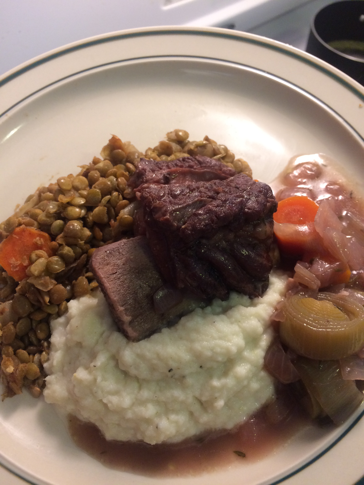

Short Rib
2 lbs short rib
1.5 cups red wine
2 cups beef stock
2 leeks, sliced
2 carrots, sliced
2 white onions, chopped
4 cloves garlic, mined
1 bunch thyme
1 bunch parsley
2 tbsp flour
3 bay leaves
Turnip Puree
5 large turnips, roughly cut into small pieces
Handful of fresh thyme
1 quart milk
1/4 cup heavy cream
2 tbsp. butter
3 cloves garlic
Lentils
1 cup green lentils
2 carrots, sliced
½ white onion, chopped
1 tbsp sugar
0.5 tbsp cinnamon
Serves Four Total Time: 150 minutes
In a large pot, add a tbsp of olive oil and bring to high heat. Brown the short ribs for a few minutes on each side in batches, then drain any fat. In same pot add another tbsp of olive oil and cook the onions and flour for about 5 minutes. Then pour in the red wine to deglaze. Add in the rest of the ingredients, including the short rib, bring to boil and then cover and simmer for two hours.
With half an hour left before short rib is done, add lentils, carrots and three cups water to a saucepan and bring to a boil, then simmer covered for about 15 minutes.
In another large saucepan add turnips, garlic, thyme and milk, bring to a simmer covering the pan about halfway. Then cook for about 20 minutes or until the turnips become soft.
Add the contents of the turnips pan into mixer along with the butter, and 1 tsp salt and pepper. Blend briefly and add in heavy cream until puree is desired consistency. Set aside
Take off lid of lentils saucepan and stir in the onion, sugar and cinnamon. Continue to cook for about 5 minutes, not allowing the lentils to become mushy.
Serve the short rib warm alongside the turnip puree and lentils.
